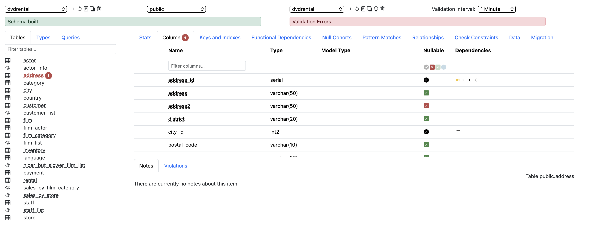
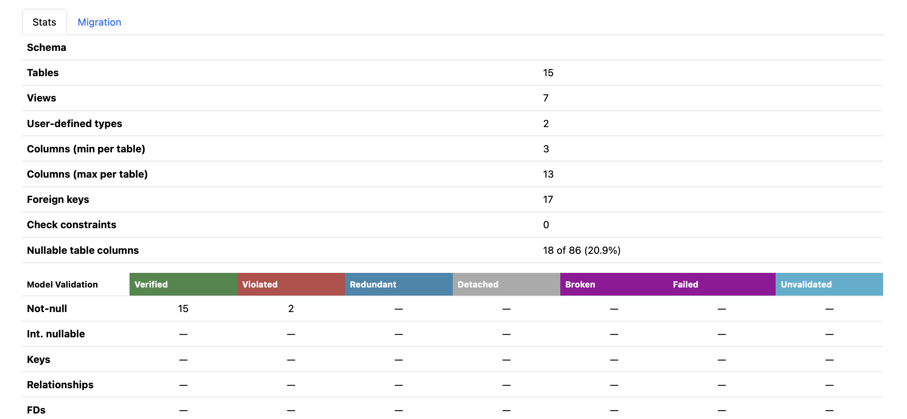
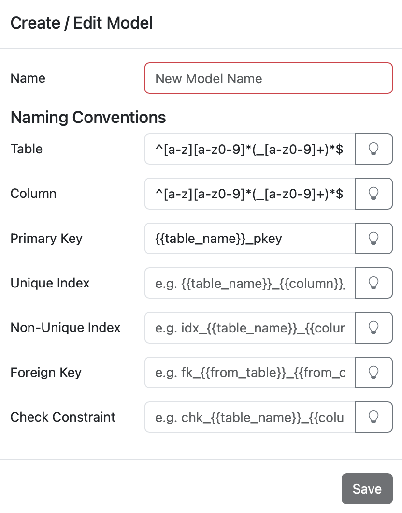
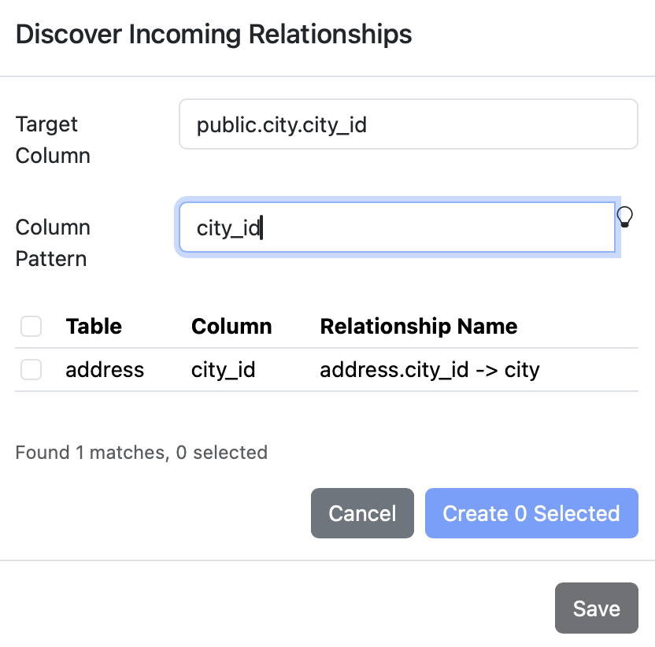
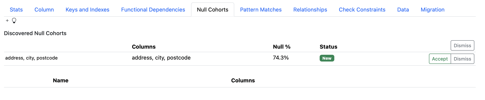
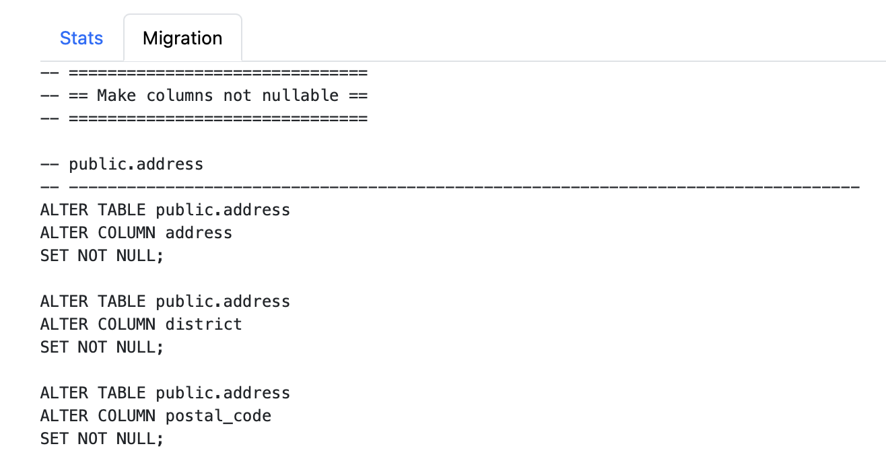

Quellery inspects your live database schema and lets you build a validated conceptual model on top of it — documenting what's intended, catching what's missing.
Get Started
Most databases accumulate years of decisions — some deliberate, some accidental. Nullable columns that should never be null. Foreign keys that exist by convention but were never declared. Columns that follow patterns no one wrote down.
Quellery connects to your live database and reads the physical schema: every table, column, key, index, and constraint. But it doesn't stop at what's declared. It analyses your actual data to surface what's implicit — inferring naming conventions, suggesting missing relationships, discovering functional dependencies, and finding groups of columns that are always null together.

You don't need to model everything at once. Start with one table — mark which columns should be required, document a missing foreign key, note that a column contains email addresses. Quellery validates your declarations against the live schema and flags mismatches immediately.
As your understanding deepens, layer on more: define functional dependencies that reveal normalisation issues, identify null cohorts that suggest table extraction, create model types that constrain column values. Each addition is validated continuously, so you always know where the physical schema diverges from your intent.
When the model is ready, Quellery generates the SQL migration scripts to bring your physical schema in line — NOT NULL constraints, foreign keys, check constraints, index creation, and table extraction for null cohorts.
Because models and databases are independent, you can point the same model at different database connections — dev, QA, production — and validate each environment against the same set of expectations. Build the model against development, then switch to production to see where reality diverges.

Mark columns as intentionally nullable or required, then validate that the schema matches your intent.
Document primary keys, unique indexes, and foreign key relationships. Discover missing ones automatically.
Define and infer functional dependencies to uncover hidden normalisation issues in your data.
Find groups of columns that are always NULL together — candidates for extraction into separate tables.
Define regex patterns, enumerations, and tuple patterns, then assign them to columns for constraint validation.
Infer and enforce naming conventions for primary keys, indexes, foreign keys, and check constraints.
Generate SQL migration scripts to bring your physical schema in line with your conceptual model.
Quellery validates your model against the live database on a configurable interval, flagging violations in real time.
From discovering hidden relationships to generating migration scripts, Quellery helps at every stage.



Connect to the databases your team already uses.
Quellery ships as a single Docker image — one docker compose up and you're inspecting schemas. Prefer not to use Docker? Download the fat JAR and run it directly with Java.